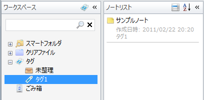

タグを付ける
ノートに作ったタグを付けます。
ノートエディタの「タグ選択」ボタンをクリックすると，タグの一覧が表示されます。 ノートに付けたいタグのチェックボックスをオンにしてメニューを閉じるとノートにタグが付けられます。
ノートエディタの「タグ」テキストボックスにノートに付けたタグ名が表示されます。
ノートにタグを付けたので，ワークスペースペインで「未整理」を選択しても ノートリストペインにノートが表示されなくなりました。
ワークスペースペインでノートに付けた「タグ1」を選択するとノートが表示されます。
